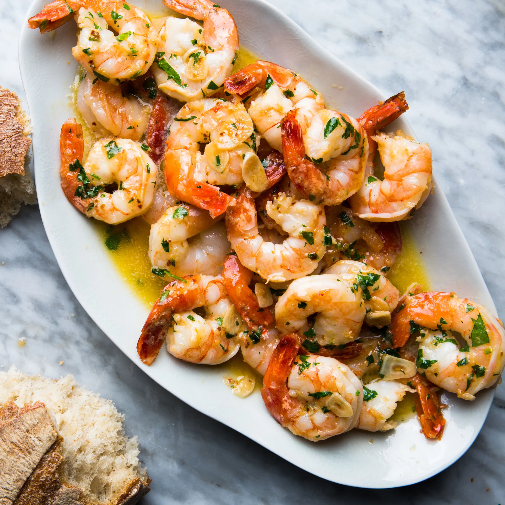

Shrimp Scampi

Description
Garlic Butter Shrimp Scampi is so quick and easy! A garlic buttery scampi sauce with a hint of white wine & lemon in less than 10 minutes! Serve as an appetizer/light meal OR for dinner with pasta! Keep it low carb and serve it over zucchini noodles or with steamed cauliflower!
Ingredients
- 4 tablespoons butter
- 4-5 cloves garlic large, minced, or 1 ½ tablespoons minced garlic
- 1 ¼ pounds shrimp large prawns, shelled with tails on or off
- Herbs like oregano or chives
- 1 pinch salt to taste
- 1 pinch cracked pepper to taste
- ¼ cup dry white wine or broth
- ½ teaspoon red pepper flakes crushed, or to taste - optional
- 2 tablespoons lemon juice
- ¼ cup fresh parsley chopped
Steps
- Heat olive oil and 2 tablespoons of butter in a large pan or skillet. Add garlic and sauté until fragrant (about 30 seconds - 1 minute). Then add the shrimp, season with salt and pepper to taste and sauté for 1-2 minutes on one side (until just beginning to turn pink), then flip.
- Pour in wine (or broth), add red pepper flakes (if using). Bring to a simmer for 1-2 minutes or until wine reduces by about half and the shrimp is cooked through (don't over cook your shrimp).
- Stir in the remaining butter, lemon juice and parsley and take off heat immediately.
- Serve over rice, pasta, garlic bread or steamed vegetables (cauliflower, broccoli, zucchini noodles).
Home